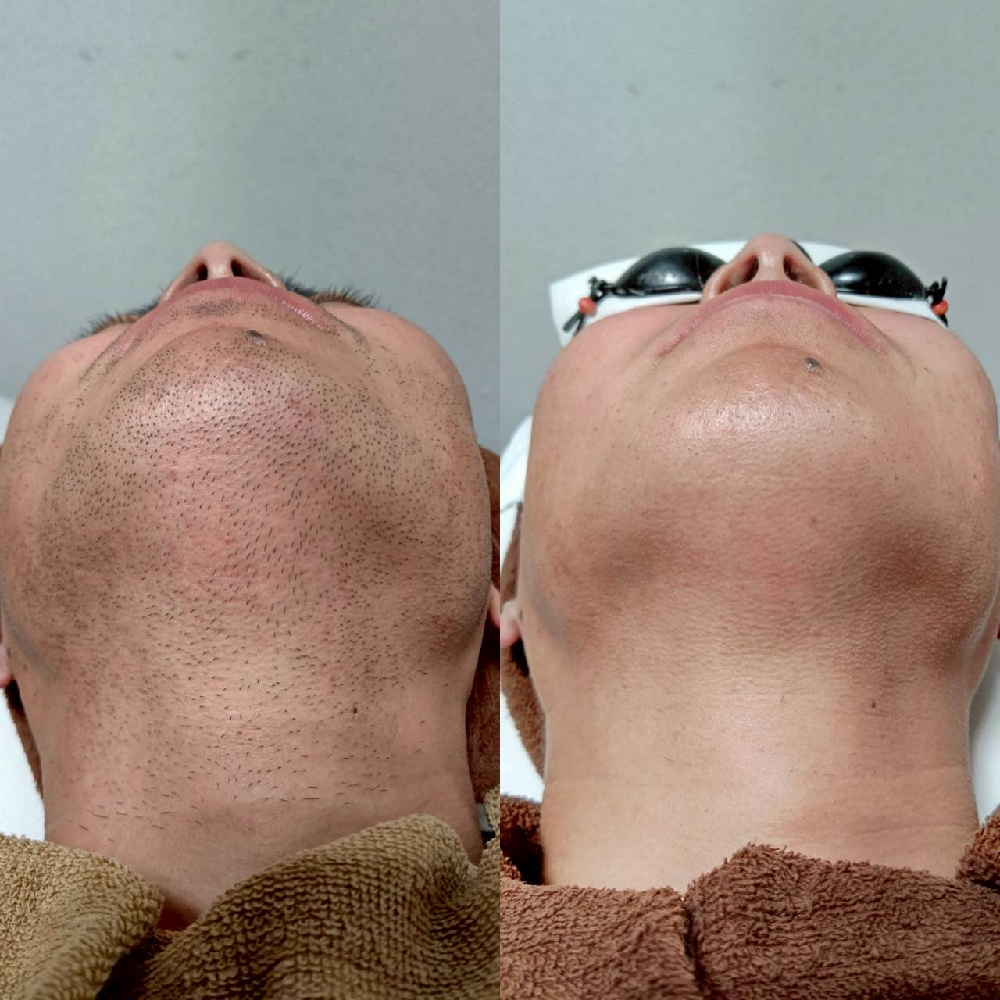

無料カウンセリングは何を聞かれる?当日までに準備しておきたいこと

「無料カウンセリングでは具体的に何を聞かれるのですか」というご質問を、来店前の方からいただくことがあります。今回は当日の内容と、事前に準備しておくと安心なことをご紹介します。
カウンセリングでは、気になる部位や自己処理の頻度、肌の状態やこれまでのトラブルの有無などを伺います。「なんとなく気になる」という漠然とした状態でも問題ありませんので、思いつく範囲で構いません。
当日までに準備しておきたいこととして、気になる部位をあらかじめ整理しておくと、カウンセリングがスムーズに進みます。金額や回数の目安について聞いておきたいことがあれば、メモしておくのもおすすめです。
効果の出方や必要な回数には個人差があります。分からないことは当日その場で確認できますので、身構えずにまずはお電話(096-247-9488)またはLINEからご予約ください。